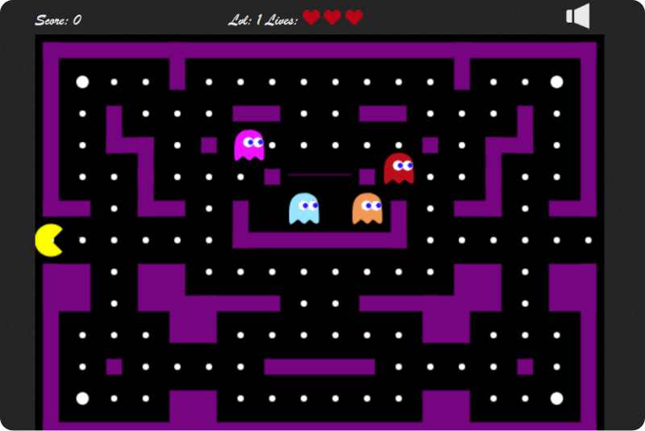

Pac-Man Application
Transitioning a containerized web game into a secure, highly available cloud infrastructure with automated continuous delivery.

Tech Stack
Azure Kubernetes Service (AKS), Azure DevOps, Terraform, Docker, Docker Scout (SBOMs), Keel, GitOps,
Link to Play!
Ms Pacman in HTML 5 Canvas
Overview
Transformed a standalone, containerized Pacman web application into a zero-downtime, production-ready system deployed on Azure Kubernetes Service. Over three major iterations, we built automated CI/CD pipelines, secured the container supply chain, provisioned cloud infrastructure with Infrastructure as Code (IaC), and set up GitOps-driven cluster deployments.
Key Technical Contributions
Infrastructure as Code (Terraform): Provisioned the full Azure cloud footprint using Terraform, automating everything from initial Azure App Services to multi-node Azure Kubernetes Service (AKS) clusters and resource groups. Automated CI/CD & Branching Strategy: Configured Azure DevOps pipelines to automate image builds and Docker Hub pushes. Enforced a branch-aware strategy that restricted production releases strictly to verified code merged into main. Container Security & Vulnerability Patching: Used Docker Scout and Software Bill of Materials (SBOM) diff analysis to audit base Nginx images. Identified and resolved hundreds of vulnerabilities by pinning container base images using explicit SHA hashes to guarantee immutable, secure builds. GitOps & In-Cluster Auto-Deployment: Deployed Keel inside the AKS cluster to create a pull-based continuous deployment pipeline. Keel actively monitored Docker Hub for new tag releases and automatically initiated rolling updates inside the cluster without external webhooks. Load Balancing & High Availability: Built declarative Kubernetes Deployment and Service manifests to manage multi-replica pod clusters behind an Azure Load Balancer. Tested live traffic distribution across pods and verified zero-downtime rolling updates during active application changes.
Practical Takeaways
Shift from Azure App Service to Managed Orchestration: Evolved the deployment pipeline from a PaaS model to a declarative, cloud-native Kubernetes environment capable of scaling pod replicas independently. Pull vs. Push Continuous Deployment: Switched from external push-style webhooks to an internal pull-based operator (Keel), allowing the cluster itself to manage rolling updates directly from the registry. Infrastructure Security: Managed Terraform state files securely using explicit .gitignore rules to prevent credential leaks, and pinned container dependencies via SHA codes rather than floating tags like latest.